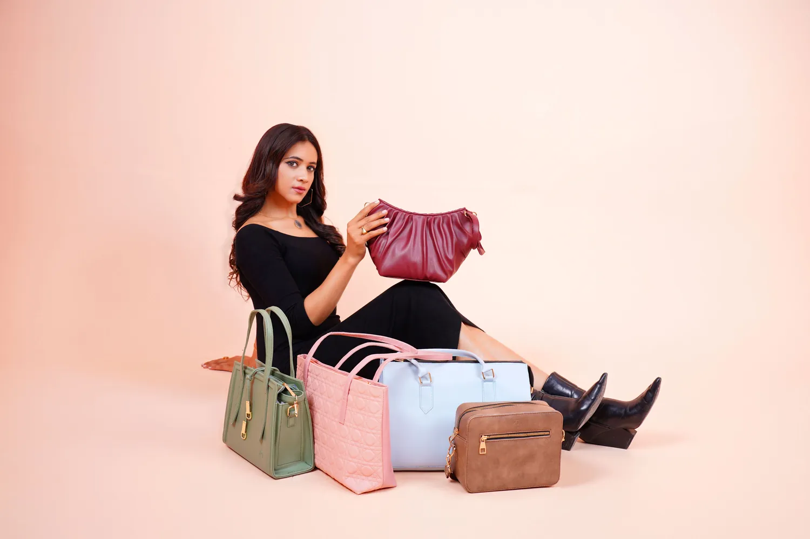
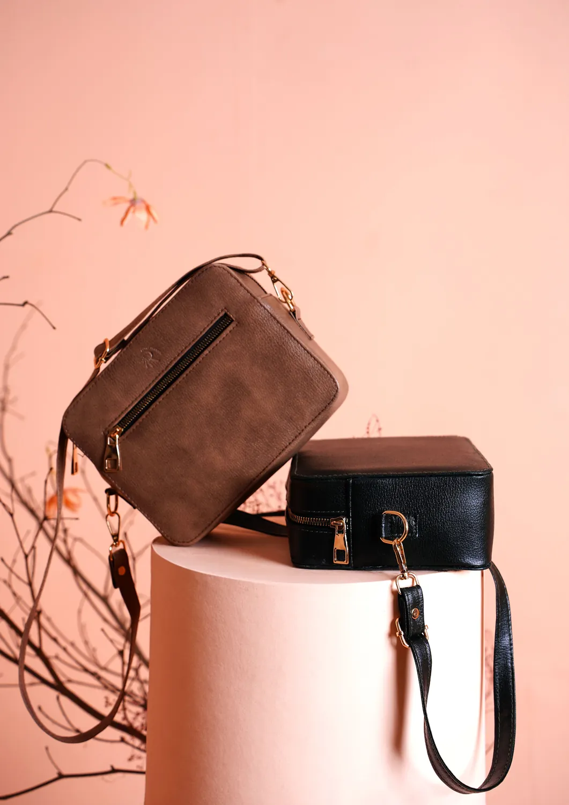
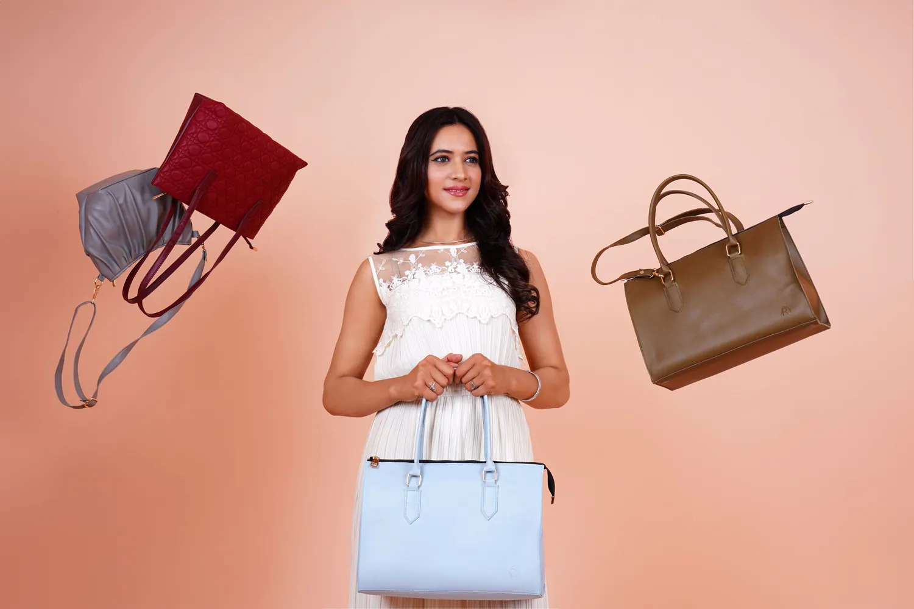
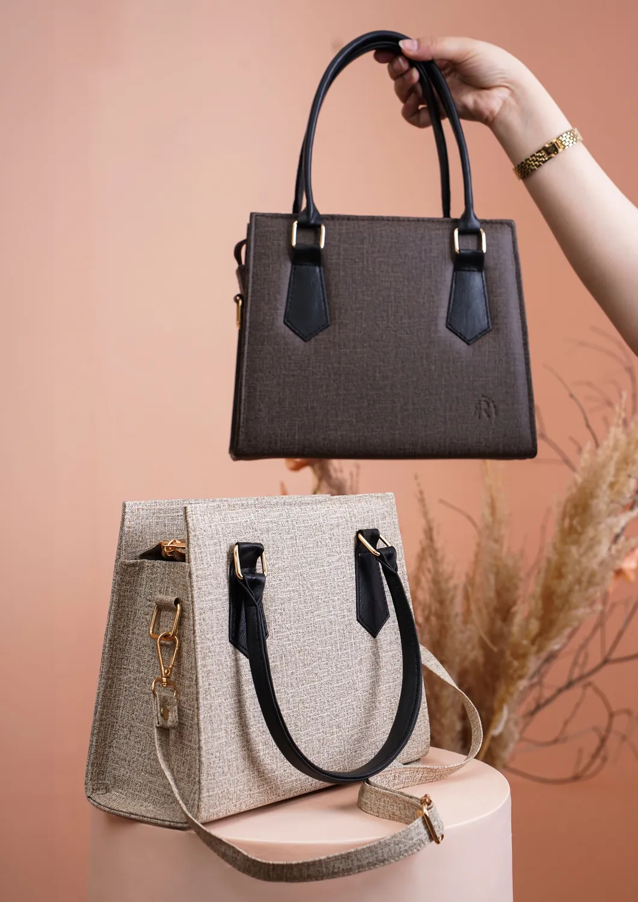

Home / Atelier
Made slowly, in Lahore
Zarine started in 2021 with one sewing machine and a tote for a cousin's rukhsati. Today eleven of us cut, stitch and finish every bag in a small studio off MM Alam Road.



“We wanted a bag that keeps its shape through a Lahore summer, a wedding season and a daily rickshaw ride, and still looks new in its second year.”
Sana Mir, founder (placeholder)
How a Zarine bag is made
About six hours of hand work go into every bag.
Each shape is drafted in card, tested in calico and carried for two weeks before we cut a single hide.
Panels are hand cut from firm, grained faux leather that will not crack or peel in heat.
Double-stitched seams, reinforced handle roots and a cotton twill lining with pockets.
Edges are painted by hand, hardware is fitted and every bag is checked before it is wrapped.

Our promise
A bag for years, not a season
Every bag carries a one-year stitching warranty. If a handle or seam gives way, send it to us and we will repair it free.